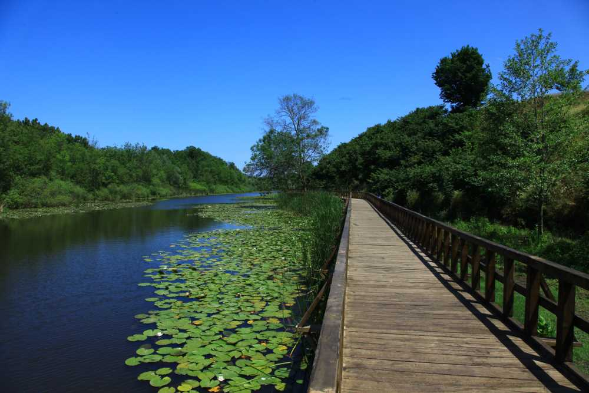

ACARLAR LONGOZU

Acarlar Longozu, Sakarya'nın kuzeyinde Karasu ve Kaynarca ilçeleri arasında yer alan Türkiye'nin tek parça halindeki en büyük longoz (subasar) ormanıdır. Genişliği 250–1250 m, uzunluğu 7,5 km'dir. Sakarya nehrinin 6 km batısında yer alır, fazla suları Okçu deresiyle Sakarya Nehri'ne dökülür.
Sakarya'daki tek Yaban Hayatı Geliştirme sahasıdır. Orman alanında dişbudak, kızılağaç, kayın, karaağaç türleri yaygındır. Gölde bir kısmı endemik olan bitki ve hayvan türleri yaşar.
Su menekşesi (Hottonia palustris) yurdumuzda endemik bir tür olarak yalnızca Acarlar Gölü’nde bulunur. Ayrıca göl lalesi (Leucojum aestivum) gibi bazı nadir türler de Acarlar Gölü’nde bulunmaktadır.